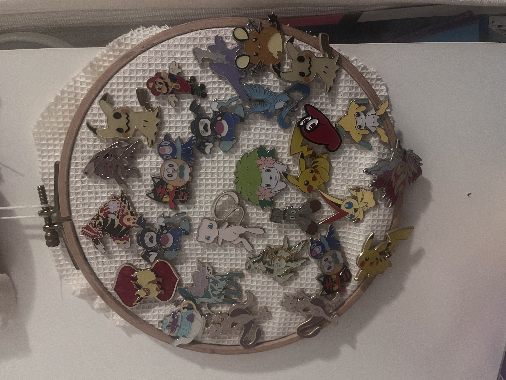
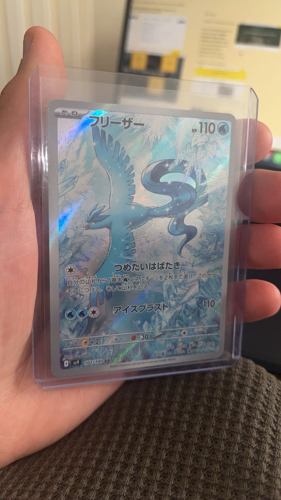
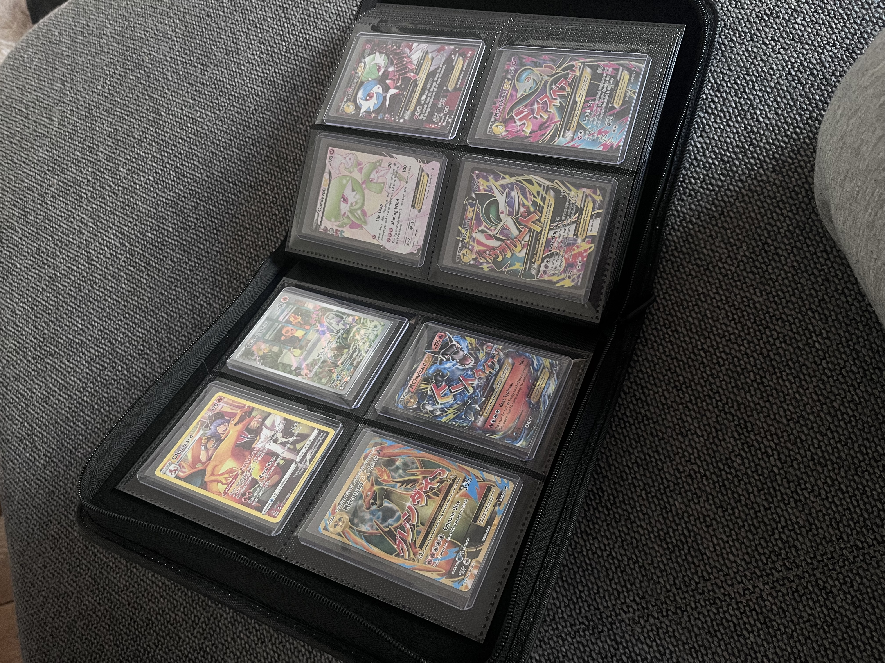
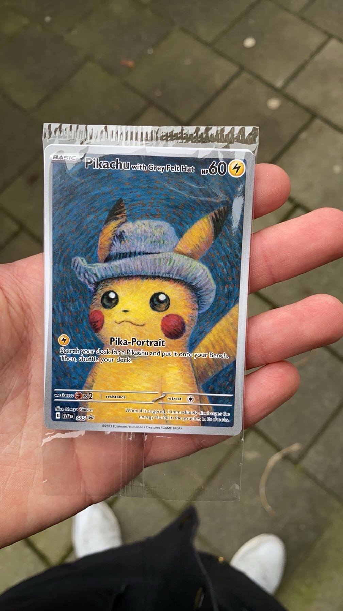
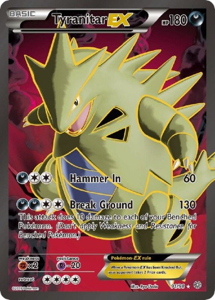

Ik vind het leuk om Pokémon kaarten te verzamelen door de unieke illustraties, het ruilen met andere mensen, de nostalgie die de kaarten met zich meebrengen en de verhalen die achter sommige kaarten zitten. Iedere kaart is uniek :D Veel kaarten hebben hele mooie artwork en een eigen stijl, die vaak te koppelen zijn aan andere kaarten van dezelfde tekenaar.



To be continued
Bronnen
- Bronnen komen hier